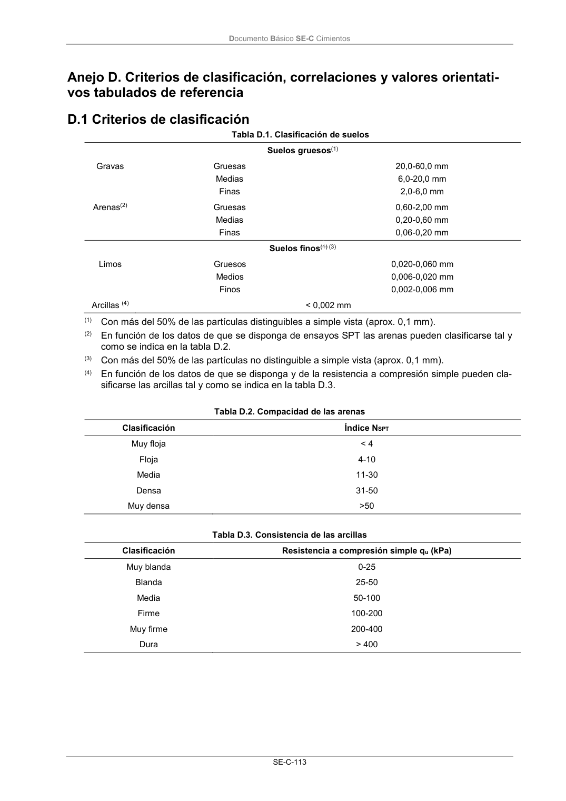

DB-SE-C Cimientos · edición 2019-12-20 · capa oficial
Documento DB-SE-C-oficial · SHA-256 del PDF a71133f4b0dca253e45ea3071c70f2a512354bcc5cd841bf89b1a502f567ac5e
Copia fiel del PDF fuente · Fuente oficial
Ficha de la disposición en la fuente oficial
Formatos: JSON del segmento · Markdown
C.4 Geofísica 1 Cuando se trate de grandes superficies a construir, y con el fin de obtener información complemen- taria que ayude a distribuir los puntos de reconocimiento así como la profundidad a alcanzar en ca- da uno de ellos, se podrán utilizar las siguientes técnicas: a) sísmica de refracción: para obtener información sobre la profundidad a la que se encuentran el nivel freático y la unidad geotécnica resistente, siempre y cuando se trate de formaciones rela- tivamente horizontales (buzamiento inferior a 15º) y la velocidad, vp, de las ondas P aumente con la profundidad. El valor vp que se obtenga en cada una de las capas analizadas podrá uti- lizarse para estimar su grado de ripabilidad; b) resistividad eléctrica: técnica SEV “sondeo eléctrico vertical” para obtener información sobre la profundidad del nivel freático y los espesores de las distintas capas horizontales del terreno (UNE 83988-2:2014). Técnica tomografía eléctrica para identificar los diferentes niveles del Documento Básico SE-C Cimientos SE-C-111 subsuelo y sus cambios laterales, identificación del nivel freático (detección de cavidades o desarrollos cársticos); c) otras técnicas geofísicas tales como Geo-radar (para obtener información sobre servicios ente- rrados, conducciones, depósitos, fluidos, nivel freático, unidades geológicas y cambios latera- les de las litologías), magnetometría, VLF, calicateo electromagnético, gravimetría, etc.; que puedan aportar una información adicional. 2 En zonas cársticas o cuando se sospeche la existencia de cavidades relativamente superficiales se podrán utilizar, además de las antes mencionadas, técnicas microgravimétricas siempre y cuando se den las condiciones ambientales adecuadas y se utilicen equipos que permitan expresar los per- files finales de las anomalías de Bouguer en unidades de 10-7 m/s2. 3 La realización, procesado e interpretación de los trabajos recogidos en los tres apartados anteriores se llevarán a cabo teniendo en cuenta las ventajas y limitaciones que entraña el uso de técnicas geofísicas e integrando los resultados en el marco geológico, geotécnico y morfológico del área es- tudiada. 4 En zonas sísmicas y para edificios de los tipos C-1 y C-2 se recomienda la utilización de ensayos “down-hole” o “cross-hole” (norma ASTM: D 4428/D4428M-14) con el fin de identificar la velocidad de propagación vs de las ondas S que permite clasificar las distintas unidades geotécnicas de acuerdo con la Norma de Construcción Sismorresistente NCSE vigente. Para edificios de los tipos C-2 y C-3 será obligatoria la realización de dicho tipo de ensayos cuando la aceleración sísmica bá- sica sea superior a 0,08 g. 5 Los ensayos “cross-hole” y “down-hole” podrán también utilizarse para caracterizar la deformabili- dad de arcillas preconsolidadas y suelos con un porcentaje apreciable de grava gruesa, cantos y bolos, tal y como se indica en el capítulo 4. 6 Con el fin de contribuir a una mejor definición de los perfiles geotécnicos del terreno mejorando las correlaciones que se puedan establecer entre sus distintas unidades geotécnicas, para la realiza- ción del estudio geotécnico se podrá exigir la testificación geofísica de los sondeos que se realicen, debiendo para ello elegir la combinación más adecuada de las siguientes diagrafías: a) gamma-natural; b) gamma-gamma; c) neutrón-neutrón; d) resistividad y potencial espontáneo; e) sónica; f) térmica. Documento Básico SE-C Cimientos SE-C-113
